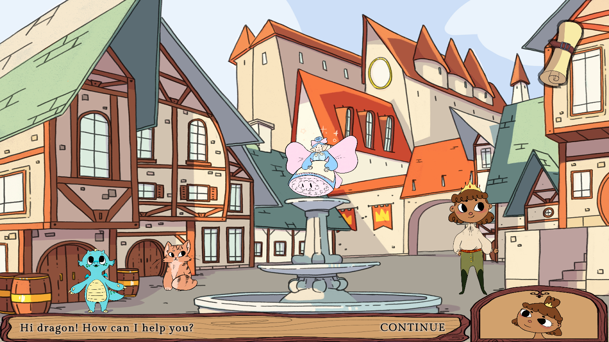

Dragon's Adventure

User Researcher and Software Engineer
Context
Wholesome, safe, and engaging computer games were almost non-existent for preschool children, leading to frustration for both parents and the young gamers. The existing games were often too fast-paced or challenging, required reading skills the children lacked, and used frustrating or predatory mechanics like paywalls.
Action
I conducted informal interviews with parents (including the sponsoring professor) to catalog their pain points with existing games. Then with my team, I analyzed early 2000s educational games and current children’s apps to identify design patterns that seemed likely to foster success vs. frustration with respect to the pain points we identified. Some of the design guidelines I synthesized for our new game were:
- Create a gentle game pace
- Limit the words on the screen, and have a voice actor read them aloud
- Use large buttons and limit the fine motor skills required (most children were just beginning to use a mouse)
- Allow players to escape from challenges they are stuck on
I also wrote the code for the “kingdom area” of the game with one of my teammates.

Result
The resulting game was successfully playtested by a target user, and our team was recognized with the Niehaus Award for outstanding workmanship. The project's success led to the creation of a new elective course at the University of Kansas.